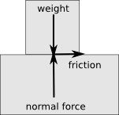

public class SolidFixture extends Fixture
| Constructor and Description |
|---|
SolidFixture(Body body,
Shape shape)
Create a fixture from a shape.
|
SolidFixture(Body body,
Shape shape,
float density)
Create a fixture from a shape.
|
| Modifier and Type | Method and Description |
|---|---|
float |
getFriction()
The current coefficient of friction for this fixture.
|
float |
getRestitution()
The current coefficient of restitution for this shape.
|
void |
setFriction(float friction)
Set the coefficient of friction for this shape.
|
void |
setRestitution(float restitution)
Set the coefficient of restitution (bounciness) for this fixture.
|
contains, destroy, getBody, getDensity, intersects, intersects, setDensitypublic SolidFixture(Body body, Shape shape)
body - the body the fixture is part ofshape - the shape of the fixturepublic void setFriction(float friction)

This proportion is the coefficient of friction, and it depends on the nature of the two bodies. A value of 0 means no friction, higher values mean more friction. A value of 1 is very strong but even higher values are allowed. For example ice would have a coefficient of friction close to zero, while rubber would have a high value.
The effective friction between two shapes is calculated using the geometric mean: sqrt(f1 * f2). Thus if one of the fixtures has zero friction, the contact will have no friction.
friction - the new friction coefficient for this fixturepublic float getFriction()
public void setRestitution(float restitution)
restitution - the new restitution coefficient for this shapepublic float getRestitution()